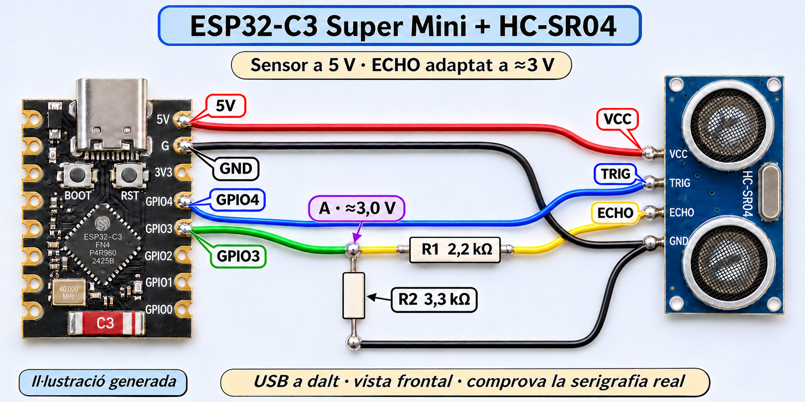
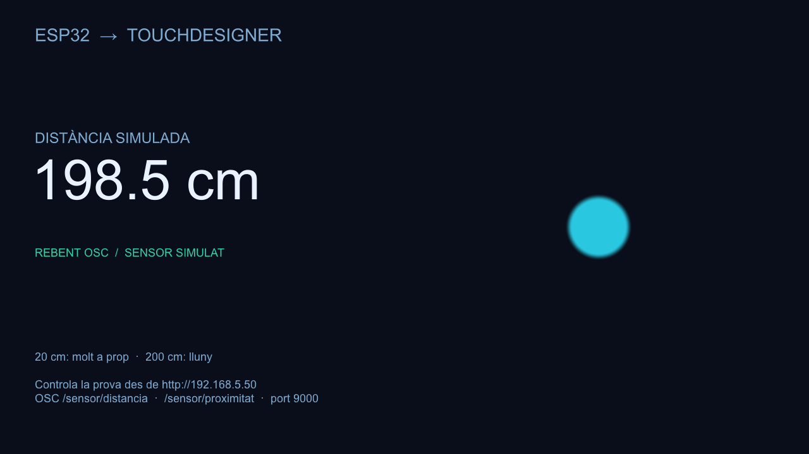

Per fer funcionar la prova
- 1 ESP32-C3 Super Mini.
- 1 cable USB-C de dades.
- Un ordinador amb Arduino IDE i TouchDesigner.
- Wi-Fi de 2,4 GHz i un mòbil per configurar.
L’USB alimenta i programa la placa. Les dades de la prova viatgen per Wi-Fi.
Construeix el teu dispositiu de distància, configura’l des del mòbil i porta’n les dades a TouchDesigner.

El muntatge que prepararem · amplia’l al pas 8Ja hem provat la configuració Wi-Fi, la web i l’enviament OSC amb distàncies simulades. El sensor físic encara no s’ha integrat al programa ni validat. Pots reproduir tota la prova de comunicació abans de soldar res.
L’USB alimenta i programa la placa. Les dades de la prova viatgen per Wi-Fi.
Arduino IDE és l’aplicació amb què copiaràs el programa i el carregaràs a la placa. Només cal preparar-la una vegada per ordinador.
Arduino IDE 2.3.10 i paquet ESP32 3.3.12. Són les versions utilitzades en aquest projecte; no significa que siguin sempre les últimes.
https://espressif.github.io/arduino-esp32/package_esp32_index.jsonAquesta és una representació orientativa de la interfície. «Arduino ESP32 Boards by Arduino» és un altre paquet i no és el que fem servir aquí.
El programa actual fa servir WiFi, WebServer, DNSServer, Preferences, WiFiUdp i esp_mac.h. Tot ve inclòs amb el paquet d’Espressif.
No cal instal·lar cap biblioteca addicional al Library Manager. WiFiManager i les biblioteques Adafruit que vam provar al principi no són necessàries per a aquesta versió.
Si apareix «WiFi.h: No such file or directory», revisa que el paquet ESP32 estigui instal·lat i que hagis seleccionat una placa ESP32 al pas següent.
Referència: instal·lació oficial d’Arduino-ESP32 ↗.
La Super Mini porta un ESP32-C3. A Arduino la seleccionarem amb el perfil genèric del C3.
/dev/cu.usbmodem…; a Windows, COM…; a Linux, /dev/ttyACM….El nom «Unknown» o «unconfirmed board» pot aparèixer si l’IDE no reconeix automàticament la Super Mini. Pots associar-hi el perfil manualment.
Desconnecta la placa i mira la llista de ports. Torna-la a connectar i tria el port nou. Els ports Bluetooth i debug-console no corresponen a aquesta connexió USB.
Si no apareix: prova un altre cable de dades i un altre connector USB. Si cal entrar al carregador, mantén BOOT, prem i deixa anar RESET i després deixa anar BOOT. Revisa de nou els ports.
Les Super Mini habituals utilitzen l’USB natiu del C3. No instal·lis un controlador CH340 o CP210x tret que la teva placa realment incorpori aquest convertidor.
Has triat ESP32 Dev Module. Canvia’l per ESP32C3 Dev Module i torna a carregar. No cal canviar el cablejat.
Referència: USB CDC a l’ESP32-C3 ↗.
Descarrega’l i carrega’l sencer. El nom Wi-Fi de cada dispositiu es crea automàticament: no has d’editar el codi per fer-ne un altre.
Exemple de sortida. Els 12 caràcters de la teva placa seran diferents.
Crea un sketch nou, esborra’n tot el contingut i enganxa el programa complet. Desa’l abans de carregar.
Carregant el programa…Conserva la prova simulada validada. Per fer-la reutilitzable, la destinació OSC inicial està buida: al pas 7 hi posaràs la IP del teu ordinador. Les configuracions ja desades en una placa es conserven.
L’ESP obre un Wi-Fi temporal perquè li indiquis a quina xarxa s’ha de connectar. Un cop configurat, treballa dins la teva xarxa.
192.168.4.1El portal viu al Wi-Fi temporal de l’ESP. No cal Internet.
Obre la IP de l’ESP per veure la web. Les dades OSC van a la IP de l’ordinador.
Per reconfigurar, mantén BOOT 5 segons i deixa’l anar. Fes-ho amb la placa ja en marxa. RESET només reinicia i conserva els ajustos. El LED d’aquesta Super Mini és a GPIO8 i s’encén amb nivell baix; altres variants poden diferir.
Comprova el nom exacte al monitor sèrie i busca’l també amb el mòbil a prop de la placa. Reobre el portal amb BOOT i torna a mirar la llista de xarxes. Una xarxa amb un nom llarg aleatori no és l’ESP si no coincideix amb el nom imprès al monitor.
El programa inclou els dos ajustos que van resoldre la prova amb aquesta placa: potència reduïda a 8,5 dBm i cerca de tots els canals per prioritzar el punt d’accés amb millor senyal. Mantén el cablejat lluny de l’antena. Si falla encara, prova una altra alimentació USB i una xarxa de 2,4 GHz senzilla abans de concloure que l’antena està avariada.
Una xarxa de convidats o amb aïllament de clients pot impedir que l’ordinador vegi l’ESP encara que tots dos estiguin connectats.
Comença amb IP automàtica. Quan tot funcioni, pots conservar-la amb una reserva al router o configurar una IP fixa a l’ESP.
Deixa la IP de l’ESP buida (DHCP). A l’administració del router, busca la llista de clients i reserva una IP per a aquest dispositiu.
El nom del menú varia segons el router: «DHCP reservation», «Static lease» o «reserva d’adreça».
| Camp | D’on el treus? |
|---|---|
| IP fixa de l’ESP | Una adreça lliure de la teva subxarxa. Exclou-la del rang DHCP o reserva-la al router. |
| Porta d’enllaç | La IP real del router; el portal l’agafa de la connexió DHCP actual. |
| Màscara | La que anuncia el router. Sovint és 255.255.255.0, però conserva la detectada. |
| DNS | El detectat. Si queda buit amb una IP fixa, el programa utilitza la IP del router. |
La primera connexió per DHCP evita haver d’inventar-los. No posis 192.168.4.1 com a IP fixa: és l’adreça del portal temporal.
Aquestes notes es desen només en aquest navegador. No enviem dades a cap servidor ni et demanem contrasenyes.
La guia de GitHub Pages no es connecta a l’ESP en segon pla. El botó obre la seva web local en una altra pestanya.
Abans de connectar el sensor, comprovarem tota la ruta amb la simulació de la placa. Així sabràs que la xarxa i TouchDesigner funcionen.
El .toe obre la prova completa. El .tox es pot arrossegar a la xarxa d’un altre projecte.
/project1/esp32_demo, selecciona osc_in (OSC In CHOP) i comprova Network Port = 9000 i Active = On. Permet les connexions entrants de TouchDesigner si el tallafoc ho demana.IP de l’ESP: per entrar a la seva web. IP de l’ordinador: destinació dels missatges OSC. No les intercanviïs.

El comptador /sensor/seq canvia amb cada enviament. Si no arriba una seqüència nova durant 1,5 segons, el panell mostra que està esperant la placa. En reiniciar l’ESP, torna el mode automàtic.
| Missatge OSC | Contingut |
|---|---|
/sensor/distancia | Float, centímetres. |
/sensor/proximitat | Float 0–1: 0 a 200 cm; 1 a 20 cm. |
/sensor/simulat | Int, 1 en aquesta versió. |
/sensor/seq | Int, comptador de lectures. |
Freqüència aproximada: 10 enviaments per segon. Els Select CHOP distancia_cm i proximitat ja t’aïllen els dos valors principals.
Referència: OSC In CHOP ↗.
El HC-SR04 de 5 V retorna un ECHO de 5 V. Les dues resistències el redueixen aproximadament a 3 V abans d’entrar al GPIO3.
La il·lustració s’ha refet amb la vista frontal de la Super Mini i el sensor que has passat. Amb l’USB a dalt, 5V i GND són els dos primers pins del costat dret; GPIO4 és el quart i GPIO3 el cinquè. La cara posterior els mostra al costat esquerre. Comprova sempre la serigrafia: la il·lustració continua sent generada.
Imatges originals que has facilitat, sense modificar. La primera és la cara amb els components i la segona, la cara posterior. No intercanviïs els costats en girar la placa.
Amb el HC-SR04 estàndard de la imatge, mantén el muntatge a 5 V i les dues resistències. La foto no acredita una variant compatible amb 3,3 V. Alguns HC-SR04 semblen funcionar amb menys tensió, però la lectura pot perdre fiabilitat; no és la configuració que utilitzem en aquesta guia.
| Part del circuit actual | Tensió / adaptació |
|---|---|
| Alimentació VCC del sensor | 5 V del pin 5V de l’ESP, quan s’alimenta per USB. |
| TRIG des de GPIO4 | Impuls de 3,3 V directe; no necessita divisor. |
| ECHO cap a GPIO3 | 5 V → R1 2,2 kΩ + R2 3,3 kΩ → aproximadament 3 V. |
Per prescindir del divisor, cal un sensor amb alimentació i sortida ECHO especificades per a 3,3 V. Per exemple, un US-100 compatible amb 3,3 V ↗, alimentat a 3V3 i en mode TRIG/ECHO (jumper posterior retirat), permet aquesta connexió lògica directa. En aquell cas cal revisar el seu pinout i mode abans de muntar; no és el HC-SR04 d’aquestes fotos.
No conservis el divisor actual si en el futur fas servir un ECHO realment de 3,3 V: el reduiria a 1,98 V, que no garanteix un nivell alt vàlid a l’ESP32-C3.
Fonts: HC-SR04 i funcionament a 3,3 V ↗ · alimentació i nivells de TRIG/ECHO ↗.
| Des de | Fins a | Connexió |
|---|---|---|
| ESP 5V | Sensor VCC | Directa; alimentació des de l’USB. |
| ESP G / GND | Sensor GND | Directa; també hi va R2. |
| ESP 4 / GPIO4 | Sensor TRIG | Directa; impuls de control de 3,3 V. |
| Sensor ECHO | R1, 2,2 kΩ | L’altre extrem de R1 va al punt A. |
| Punt A | ESP 3 / GPIO3 | Al mateix punt hi va un extrem de R2. |
| R2, 3,3 kΩ | GND comú | Entre el punt A i GND. |
ECHO ── R1 · 2,2 kΩ ──●──── GPIO3
│
R2 · 3,3 kΩ
│
GND5 × 3,3 / (2,2 + 3,3) = 3,0 V. Les resistències no tenen polaritat, però els valors no es poden intercanviar en aquest esquema. No connectis ECHO directament al GPIO.
R1 i R2 no redueixen l’alimentació del sensor: VCC continua rebent 5 V. El GPIO mesura la tensió del punt A i pràcticament no absorbeix corrent.
Quan ECHO és alt, el divisor deixa passar aproximadament 0,91 mA. Les fletxes taronges representen corrent convencional; els electrons es desplacen en sentit contrari.
Referències: HC-SR04 i adaptació d’ECHO ↗ · referència de la Super Mini ↗.
Fes primer una prova provisional si tens protoboard. Per soldar, desconnecta l’USB i tota altra alimentació.
En una placa perforada amb pistes contínues, comprova que el coure no curtcircuiti els extrems d’una resistència.
Alimenta el conjunt només des de l’USB de l’ESP per a aquesta prova. No afegeixis una segona font de 5 V alhora.
Amb el sensor i el GPIO3 desconnectats del divisor, aplica temporalment 5 V a l’extrem lliure de R1 i GND a l’extrem lliure de R2. Mesura el punt A respecte de GND: ha de donar prop de 3 V.
Desconnecta l’alimentació i retira la connexió temporal a 5 V abans de connectar ECHO i GPIO3 segons l’esquema. No deixis aquest pont al muntatge final.
Encara que connectis el sensor correctament, el programa d’aquest repositori continuarà mostrant dades simulades. Falta integrar i provar la lectura de TRIG (GPIO4) i ECHO (GPIO3). No interpretis el moviment actual del cercle com una mesura del sensor.
El programa és el mateix. Canvien la identitat de la placa, la seva IP i el port amb què la distingiràs a TouchDesigner.
osc_in.| Dispositiu | Wi-Fi de configuració | Port OSC |
|---|---|---|
| Entrada | ESP-Config-… propi | 9000 |
| Finestra | ESP-Config-… propi | 9001 |
| Passadís | ESP-Config-… propi | 9002 |
Els noms són exemples; els ports els tries tu. La IP de destinació OSC és la de l’ordinador receptor en tots tres.
Totes les plaques envien els mateixos noms /sensor/…. Si les envies al mateix port, es barrejaran. La separació per ports evita aquesta confusió en aquesta versió.
Wi-Fi, contrasenya de la xarxa, IP i destinació OSC queden guardats a la memòria de l’ESP. RESET no els esborra. La simulació torna al mode automàtic en arrencar.
Per canviar de xarxa, alimenta la placa, mantén BOOT 5 segons i deixa’l anar. Connecta’t al seu Wi-Fi individual. El portal de qualsevol placa continua sent 192.168.4.1 quan t’hi connectes directament.
El Wi-Fi de configuració utilitza la clau inicial compartida Configura32. Pots canviar AP_PASSWORD abans de carregar el programa si vols una clau pròpia.
Placa programada, Wi-Fi configurable, web accessible i distàncies simulades arribant a TouchDesigner. Les dues il·lustracions i l’esquema funcional t’ajuden a preparar el sensor físic. Quan s’integri la lectura real, aquesta guia s’haurà d’actualitzar amb aquella versió validada.